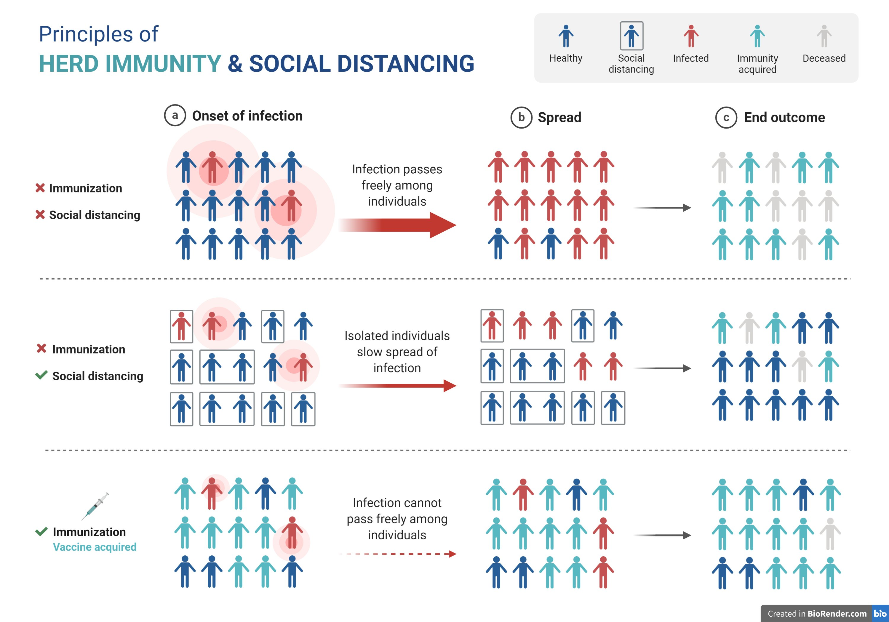
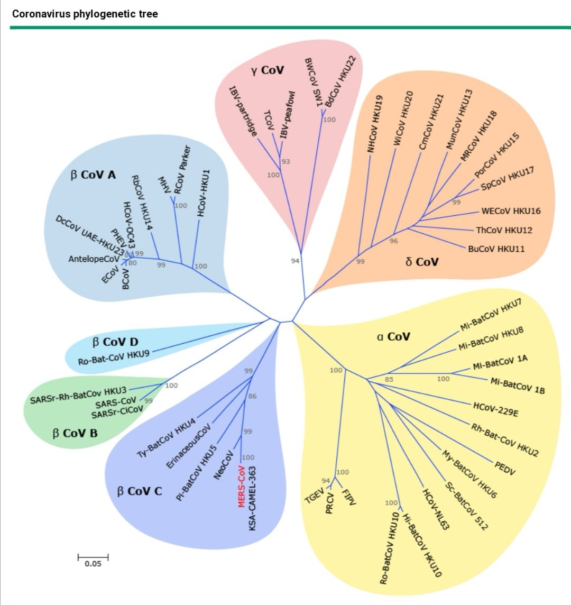
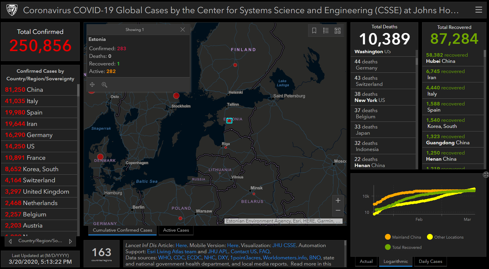
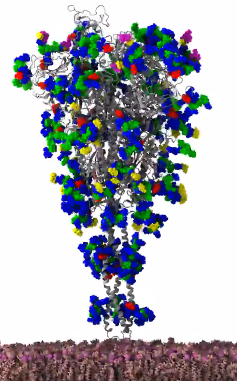
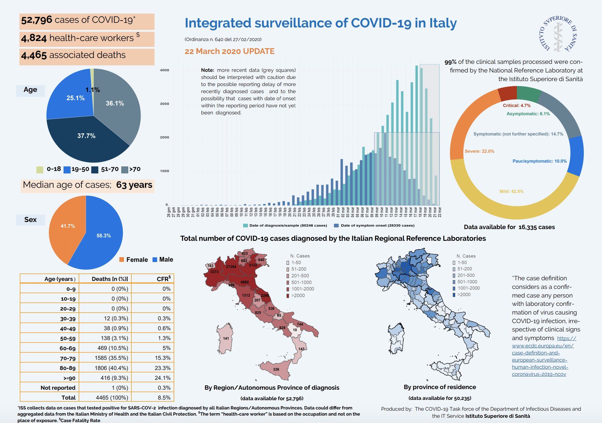
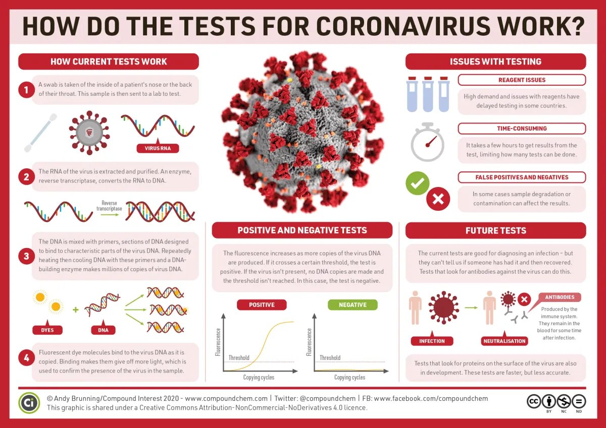
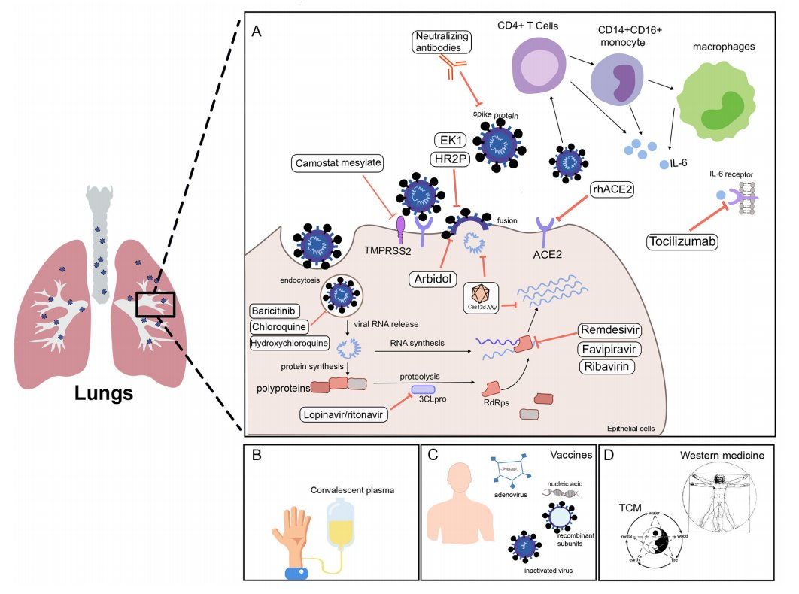
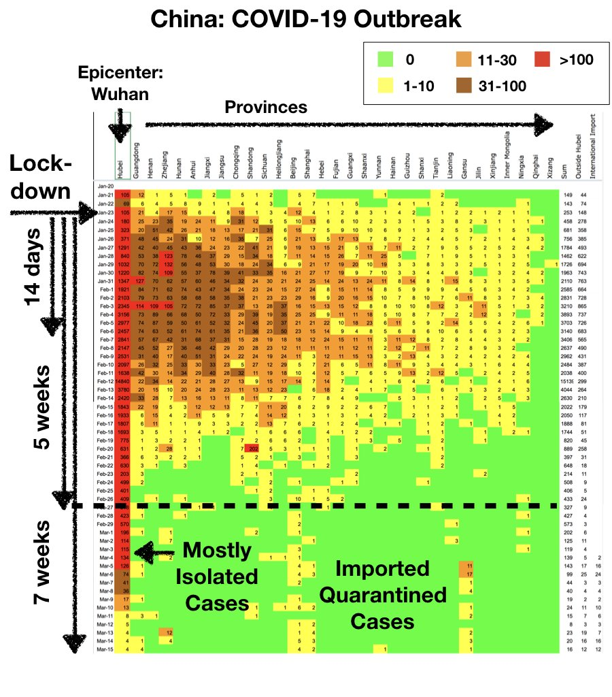

Some notes found on the twitter.
Prof. Akiko Iwasaki @VirusesImmunity: There is a lot of talk about #herdimmunity. Vaccination is the only safe way to achieve it. In the absence of vaccine, we need to practice #SocialDistancing. @BioRender made this amazing infographic to explain how a hypothetical virus spreads through the population.
Herd immunity describes indirect protection from infectious disease when a large % of people in a population is immune to the pathogen. The % threshold of immune individuals required for #herdImmunity depends on how contagious (R0) the pathogen is.
In the absence of vaccination, the virus will spread quickly and kill people, while the recovered will be immune (top). With #SocialDistancing, many more will survive. Some become immune (middle). If a vaccine is introduced, most will survive and become immune (bottom). (4/n)
With #COVID19 with its lethality rate, the only safe way to achieve herd immunity is through vaccination. That is why it is so important to develop effective vaccines. Trying to achieve herd immunity through natural infection will put millions of lives in danger. (5/n)
Even with quarantine of high risk groups, exposure of 'low risk' group to #COVID19 will result in 0.2% risk of death among 10-39 year old, 0.4% for 40-49, 1.3% for 50-59 year old. The risk for hospitalization is a lot higher than this. (6/n)
Coronavirus tracked: the latest figures as the pandemic spreads FT
https://www.ft.com/coronavirus-latest   Science: Biography new coronavirus Hieno palikkasimulaatio viruksen leviämisestä. Outbreak Kännyköiden liikettä seuraamalla voidaan tutkia jopa Covid19-viruksen kulkua, kertoo NY Times.   The early phase of the COVID-19 outbreak in Lombardy, Italy Terviseametin koronavirussivu.
 Covid19 trends"Koronavirustoimenpiteet Tsekeissä
Coronavirus interactive  THL:n koronaviruskartta NA 1918 Spanish Flu Ihme Suomen THL-data uusiksi sairaanhoitopiireittäin." SER- ja SEIR-mallit